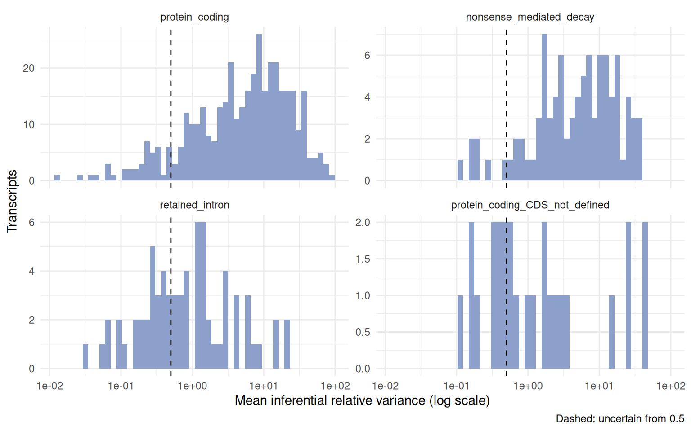
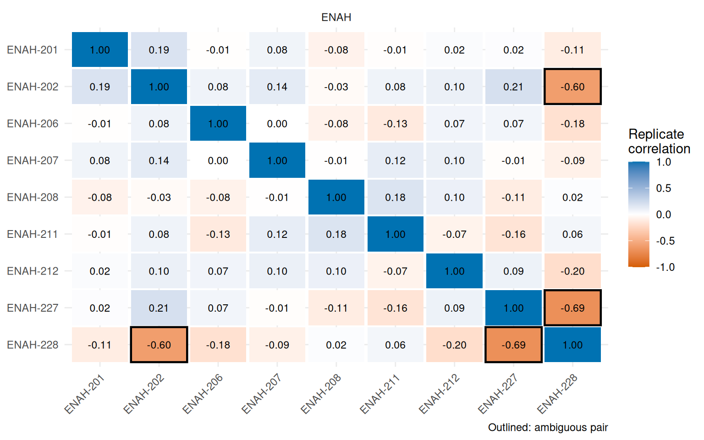
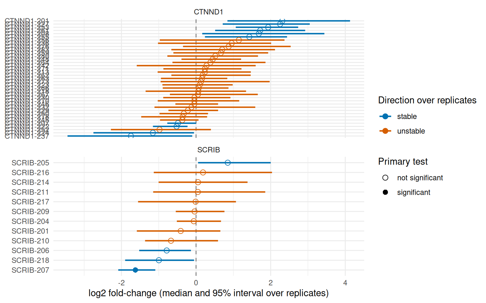
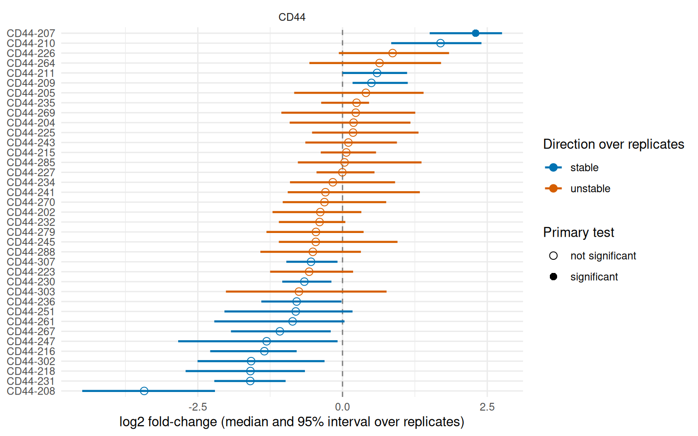

iso <- read_salmon(quant_dirs, annot_path = annot_dir, col_data = col_data, inferential = TRUE)
# or, with a contrast and other cutoffs
iso <- read_salmon(quant_dirs, annot_path = annot_dir, col_data = col_data)
iso <- add_uncertainty(iso, paths = quant_dirs, group = "condition")How confident are we in an isoform-level result?
October 17, 2026
Source:vignettes/articles/isoformic-uncertainty.qmd
Reads that map to several isoforms of a gene can be shared out between them in more than one way, so the abundance of an isoform is estimated with an uncertainty that has nothing to do with biological variability. A fold-change between two isoforms that share most of their reads can be an artefact of how those reads were apportioned in each sample, however clean the statistics look.
Salmon (Patro et al. 2017) measures this inferential uncertainty by drawing replicates from the posterior of the abundances (Gibbs sampling, --numGibbsSamples, 30 by default in salmon_quant()) and by writing the equivalence classes (--dumpEq) and a run summary (meta_info.json). Gibbs samples resolve low counts better than bootstrap replicates, and the overdispersion used further down to scale counts is precise once the study has at least 60 degrees of freedom, counted as samples times replicates minus one (200 to 300 preferred) (Baldoni, L. Chen, et al. 2024): 30 draws meet that minimum from three samples up (87 degrees of freedom) and reach the preferred range from seven (203), and add_uncertainty() says so when a study falls short. isoformic turns them into four kinds of evidence for every isoform and a check of the direction of every differential expression call:
| Evidence | Question it answers | Columns |
|---|---|---|
| Quantification uncertainty | Is the abundance determined by the reads? |
mean_inf_rv, uncertain
|
| Ambiguity between isoforms | Can the isoform be told apart from its siblings? |
min_sibling_cor, ambiguity_group
|
| Read support | How many of its reads map to it alone? | unique_fraction |
| Fold-change stability | Does the contrast survive resampling the quantification? |
sign_agreement, unstable, lfc_lo, lfc_hi, frac_draws_sig
|
The first three are properties of the quantification; the last one is a property of one contrast.
This article shows how to compute and read these columns on a small panel of genes. Whether they matter in a genome-wide analysis of a real cohort is the subject of the evidence article. In short, in held-out halves of a placenta cohort the calls whose direction fewer than 95% of the draws agreed on (unstable) replicated less often than the other calls, and the other columns predicted replication more weakly there (in technical read halves every flag predicted non-replication), but the flag marked only about one in ten of the calls that failed to replicate, so a stable direction does not make a call right. isoformic therefore reports unstable as the flag of a call and the other columns as descriptions of the isoform: a three-way confidence class built from all of them, used by earlier development versions, marked most of the calls (83%), separated replicating from non-replicating calls only modestly, and as a filter would have discarded 81% of the calls that replicated, so it was removed.
Quantifying with replicates
Ask Salmon for the replicates and the equivalence classes. salmon_quant() does it by default; from a shell:
salmon quant ... --numGibbsSamples 30 --dumpEq --dumpEqWeightsThe evidence article used 30 replicates. Its InfRV thirds barely changed when computed from 15 of them (94% of transcripts stay in the same third), but it did not test more draws for its calls. For isoforms near a cutoff (few unique fragments or reads, retained introns, lncRNAs), more draws are expected to make the flags more stable, since InfRV computed from more draws has a smaller sampling error, but this was not tested, and they cost time and disk space. Separately, about half of lncRNA isoforms sit in a TreeTerminus tree that differs between two Salmon runs, one with 30 and one with 100 draws; that comparison mixes the number of draws with the randomness of an independent run (see the quantification stability article). Then read everything in one call, from the same output directories used for read_salmon():
The replicates are read for the transcripts with an estimated mean count of at least one, and the run metadata of every sample is added to col_data(). The replicates stay in memory (iso@metadata$inf_reps; keep_draws = FALSE drops them); the tables derived from them, and the draws that are kept, are stored in the object and written by write_isoformic().
The example
The package ships two small real datasets in which an isoform switch defines the phenotype. ESRP1 and ESRP2 are epithelial splicing regulators that keep cells in an epithelial isoform program; their loss moves many genes (CD44, CTNND1, ENAH, SCRIB, …) to the isoforms of mesenchymal cells. In prostate cancer the androgen receptor controls ESRP2, which makes this switch part of the androgen response (Munkley et al. 2019).
| Series | Cells | Knockdown | Reference |
|---|---|---|---|
| GSE129540 | prostate cancer |
ESRP2 siRNA, 3 vs 3 |
Munkley et al. (2019) |
| GSE75489 | H358 lung epithelial |
ESRP1 and ESRP2 shRNA, 3 vs 3 |
Yang et al. (2016) |
Both were re-quantified from the public reads (the first 12 million read pairs of each sample) with Salmon 2.8.0 against GENCODE v50, with 30 Gibbs draws and equivalence classes.
The swish test (Zhu et al. 2019) was run on the complete quantification, so its q-values are those of the full analysis; only the transcripts of 38 genes for the prostate series and 39 for H358 (known ESRP targets and the genes with the most significant transcripts) are bundled. These counts are gene names: HLA-B, HLA-C, IFI27, and SCRIB also have copies on alternate haplotypes and patches, so the objects below count 47 and 52 GENCODE gene IDs. data-raw/build_knockdown_example.R rebuilds everything from the Salmon output.
library(isoformic)
library(dplyr)
extdata <- fs::path_package("isoformic", "extdata")
read_knockdown <- function(series) {
dir <- fs::path(extdata, "knockdown", series)
iso <- IsoformicExperiment(
experiment_name = series,
annot_path = fs::path(extdata, "knockdown_annotation"),
assays = list(
abundance = read_parquet(fs::path(dir, "abundance.parquet")),
counts = read_parquet(fs::path(dir, "counts.parquet"))
),
col_data = read_parquet(fs::path(dir, "col_data.parquet"))
)
de_tx(iso) <- read_parquet(fs::path(dir, "det.parquet"))
# The draws and the equivalence classes of the Salmon runs
iso@metadata$inf_reps <- as_inferential_replicates(
read_parquet(fs::path(dir, "draws.parquet"))
)
list(iso = iso, equivalence = read_parquet(fs::path(dir, "equivalence.parquet")))
}
prostate <- read_knockdown("GSE129540")
iso <- prostate$iso
iso
#> <IsoformicExperiment> GSE129540
#> annotation : gencode_v50_knockdown_subset (52 genes, 2,001 transcripts, 21,575 exons)
#> samples : 6 [condition, library_size, run, salmon_version, library_type, detected_library_type, num_processed, num_mapped, percent_mapped, replicate_type, num_replicates, optimiser, em_converged, seq_bias_correct, gc_bias_correct, pos_bias_correct, frag_length_mean, frag_length_sd, qc_flag]
#> transcripts: 581 assayed from 47 genes
#> assays : abundance, counts
#> gene assays: derived from transcript assays on demand
#> DE results : det (581 transcripts)The small result tables of the checks further down (read-split experiments, tool comparisons) are bundled; this helper reads them.
read_split <- function(name) {
read_parquet(fs::path(extdata, "knockdown", "read_split", paste0(name, ".parquet")))
}
usage_rep <- read_split("usage_replication")
usage_pct <- function(method, scaled, column) {
x <- usage_rep[[column]][usage_rep$method == method & usage_rep$scaled == scaled]
paste0(round(100 * x), "%")
}
usage_null <- read_split("usage_null")
# a column of usage_null for one method and scaling, in both null contrasts
null_n <- function(method, scaled, column) {
x <- usage_null[usage_null$method == method & usage_null$scaled == scaled, ]
x <- x[order(x$contrast), ]
paste(x[[column]], collapse = " and ")
}Run-level checks come first: the mapping rate, the library type and whether the optimiser converged are in the sample table, from salmon_run_qc().
col_data(iso) |>
select(sample_id, condition, num_mapped, percent_mapped, num_replicates, qc_flag)
#> # A tibble: 6 × 6
#> sample_id condition num_mapped percent_mapped num_replicates qc_flag
#> <chr> <chr> <dbl> <dbl> <dbl> <chr>
#> 1 control_1 control 11202012 93.4 30 <NA>
#> 2 control_2 control 11262504 93.9 30 <NA>
#> 3 control_3 control 11261427 93.8 30 <NA>
#> 4 knockdown_1 knockdown 11372738 94.8 30 <NA>
#> 5 knockdown_2 knockdown 11325161 94.4 30 <NA>
#> 6 knockdown_3 knockdown 11391711 94.9 30 <NA>The library_size column holds the total estimated count of the complete quantification. Because the object keeps only a subset of the transcripts, add_uncertainty() uses it to scale the counts before it computes the fold-changes.
The bundled swish result has these isoforms at a q-value below 0.05; isoformic calls an isoform significant (det_sig, counted by de_confidence() as n_det_sig) when it also changes by at least 1 log2 unit, the default of de_cutoffs():
Computing the uncertainty
add_uncertainty() computes the tables and, given a group, repeats the contrast on every draw. Without paths it uses the draws already in the object.
iso <- add_uncertainty(
iso,
group = "condition",
levels = c("control", "knockdown"),
equivalence = prostate$equivalence
)
iso
#> <IsoformicExperiment> GSE129540
#> annotation : gencode_v50_knockdown_subset (52 genes, 2,001 transcripts, 21,575 exons)
#> samples : 6 [condition, library_size, run, salmon_version, library_type, detected_library_type, num_processed, num_mapped, percent_mapped, replicate_type, num_replicates, optimiser, em_converged, seq_bias_correct, gc_bias_correct, pos_bias_correct, frag_length_mean, frag_length_sd, qc_flag]
#> transcripts: 581 assayed from 47 genes
#> assays : abundance, counts
#> gene assays: derived from transcript assays on demand
#> DE results : det (581 transcripts)Which isoforms are not determined by the reads?
tx_uncertainty() has one row per assessed transcript. mean_inf_rv is the inferential relative variance (Zhu et al. 2019): the variance of the draws in excess of the counting noise (the mean), relative to the expression, averaged over samples. The formula is the one of fishpond and Terminus (Sarkar et al. 2020): max(variance - mean, 0) / (mean + 5) + 0.01. A well-determined isoform has a value near zero (0.01 at the least); the value of one that shares its reads with others can be tens of units (up to 90 here).
unc <- tx_uncertainty(iso)
unc |>
arrange(desc(mean_inf_rv)) |>
select(any_of(c("gene_name", "transcript_name", "mean_count", "mean_inf_rv", "uncertain", "unique_fraction"))) |>
head(8)
#> # A tibble: 8 × 6
#> gene_name transcript_name mean_count mean_inf_rv uncertain unique_fraction
#> <chr> <chr> <dbl> <dbl> <lgl> <dbl>
#> 1 FLNB FLNB-201 567. 90.4 TRUE 0
#> 2 ACSL3 ACSL3-202 520. 81.4 TRUE 0
#> 3 CLSTN1 CLSTN1-201 161. 74.7 TRUE 0
#> 4 ACSL3 ACSL3-201 85.7 72.2 TRUE 0
#> 5 APLP2 APLP2-227 195. 66.2 TRUE 0
#> 6 MPRIP MPRIP-253 150. 65.4 TRUE 0
#> 7 MPRIP MPRIP-221 174. 61.6 TRUE 0
#> 8 CLSTN1 CLSTN1-217 473. 58.4 TRUE 0
table(unc$transcript_type, unc$uncertain)
#>
#> FALSE TRUE
#> nonsense_mediated_decay 6 87
#> protein_coding 40 352
#> protein_coding_CDS_not_defined 9 17
#> retained_intron 28 42The distribution per transcript type, with the cutoff that marks uncertain isoforms (inf_rv_cutoff, 0.5 by default). The cutoff marks inferential variance above the sampling noise of 30 draws, which puts well-determined, highly expressed transcripts near 0.1; it describes the isoform and is not used to judge a call. In a full human annotation it marks most expressed isoforms (87% in the placenta cohort of the evidence article), so read mean_inf_rv itself rather than the flag:
plot_inf_rv(iso)
unique_fraction is the share of the fragments of an isoform that are compatible with it alone, read from the equivalence classes of --dumpEq. It is the most direct measure of read support. With paths, add_uncertainty() reads the classes itself; here the table returned by equivalence_support() is passed instead.
Which isoforms cannot be told apart?
When two isoforms share their reads, every fragment given to one is taken from the other, and their draws are negatively correlated. isoform_ambiguity() reports the mean correlation of every pair of isoforms of the same gene; pairs at or below cor_cutoff (-0.5) are ambiguous and connected into ambiguity_groups. This is the idea of mmcollapse (Turro et al. 2014), which merges the most anti-correlated transcripts until a threshold taken from the data is passed; here the cutoff is fixed by default, and add_uncertainty(cor_cutoff = "adaptive") derives it from the data as mmcollapse does.
isoform_ambiguity(iso, ambiguous_only = TRUE) |>
select(gene_name, transcript_name_1, transcript_name_2, mean_cor, min_cor, n_samples)
#> # A tibble: 23 × 6
#> gene_name transcript_name_1 transcript_name_2 mean_cor min_cor n_samples
#> <chr> <chr> <chr> <dbl> <dbl> <int>
#> 1 SLC45A3 SLC45A3-201 SLC45A3-214 -0.867 -0.955 6
#> 2 CTBP1 CTBP1-255 CTBP1-264 -0.826 -0.950 6
#> 3 ENAH ENAH-227 ENAH-228 -0.687 -0.822 6
#> 4 RPS24 RPS24-214 RPS24-202 -0.666 -0.834 6
#> 5 RPL17 RPL17-265 RPL17-202 -0.651 -0.747 6
#> 6 KIF13A KIF13A-203 KIF13A-206 -0.630 -0.744 6
#> 7 RPL17 RPL17-222 RPL17-220 -0.603 -0.798 6
#> 8 ENAH ENAH-228 ENAH-202 -0.603 -0.851 6
#> 9 ZC3HAV1 ZC3HAV1-201 ZC3HAV1-205 -0.597 -0.904 6
#> 10 C1orf116 C1orf116-202 C1orf116-201 -0.596 -0.746 6
#> # ℹ 13 more rows
plot_isoform_correlation(iso, gene_name = "ENAH")
An ambiguous pair is a statement about this quantification: one isoform of the pair may be up and the other down, or both unchanged, with the same data. The sum of the pair is better determined than either part.
How stable is each fold-change?
de_confidence() repeats the contrast on every draw and summarises the log2 fold-change: its median and 95% interval, the share of draws that agree on its direction (sign_agreement) and the share in which the isoform is called differentially expressed (frac_draws_sig). The direction is compared with the median of the per-draw fold-changes, not with the fold-change of the primary test.
-
unstableisTRUEwhen fewer thanmin_agreement(95%) of the draws agree on the direction. With 30 draws that allows one draw to disagree; with fewer than 20 draws, none. -
unstable_deisTRUEfor a call of the primary test with an unstable direction. Read the flag on the significant isoforms only: an isoform that does not change has a median fold-change near zero, and its direction over the draws is close to a coin toss. -
flagslists the descriptions that apply to the isoform: unstable direction, uncertain quantification (mean_inf_rvat or above the cutoff), ambiguous with a sibling isoform and, when computed, not identifiable from the equivalence classes.
None of these is a verdict on a call. In the genome-wide evaluation calls with an unstable direction replicated less often in held-out halves of the cohort (odds ratio 0.36, see below), but the flag marked only 10% of the calls that failed to replicate: most false calls have a stable direction.
conf <- de_confidence(iso)
conf |>
filter(n_det_sig > 0) |>
select(gene_name, transcript_name, det_log2FC, lfc_lo, lfc_hi, sign_agreement, unstable, mean_inf_rv, flags) |>
head(10)
#> # A tibble: 10 × 9
#> gene_name transcript_name det_log2FC lfc_lo lfc_hi sign_agreement unstable
#> <chr> <chr> <dbl> <dbl> <dbl> <dbl> <lgl>
#> 1 IFIT2 IFIT2-216 7.83 7.24 8.38 1 FALSE
#> 2 IFIT2 IFIT2-201 7.46 7.12 8.15 1 FALSE
#> 3 IFIT3 IFIT3-202 7.28 6.89 7.75 1 FALSE
#> 4 OASL OASL-211 7.19 6.87 7.69 1 FALSE
#> 5 OASL OASL-206 6.61 6.26 7.25 1 FALSE
#> 6 IFIT1 IFIT1-203 6.50 6.01 7.18 1 FALSE
#> 7 IFIT1 IFIT1-205 6.43 5.88 7.36 1 FALSE
#> 8 ZC3HAV1 ZC3HAV1-204 5.48 4.98 6.48 1 FALSE
#> 9 IFIT3 IFIT3-201 5.35 4.66 5.81 1 FALSE
#> 10 OASL OASL-201 5.36 4.56 5.82 1 FALSE
#> # ℹ 2 more variables: mean_inf_rv <dbl>, flags <chr>
table(significant = conf$n_det_sig > 0, unstable = conf$unstable, useNA = "ifany")
#> unstable
#> significant FALSE TRUE
#> FALSE 109 426
#> TRUE 46 0In this panel none of the 46 significant isoforms has an unstable direction. Most of the isoforms that are not significant do, as expected for isoforms that do not change, whose direction over the draws is close to a coin toss; that is why the flag is read on the calls only.
plot_de_confidence(iso, gene_name = c("SCRIB", "CTNND1"))
A significant isoform with an unstable direction is not wrong: the quantification does not determine its sign, which is worth a second look before the call is interpreted. A fold-change interval that crosses zero is the visible form of the same thing. flags describes the isoform behind a call; an uncertain or ambiguous isoform can still carry a real change.
Two things stand out in these data. First, the isoforms with the largest fold-changes are not the ESRP targets: IFIT1, IFIT2, IFIT3, OASL and ZC3HAV1 are interferon-stimulated genes, which is a common response to transfected siRNA (an interpretation, not something these data test). Their intervals are narrow (about 1.5 log2 units wide or less for the ten largest changes) and every draw agrees on their direction, but their inferential variance is 0.8 to 18, above the cutoff, and the IFIT1 and IFIT2 isoforms and OASL-201 also have an ambiguous sibling: the gene changes, and which of its isoforms carries the change is less certain. Second, the ESRP targets themselves are mostly in genes with many annotated isoforms (91 for CTNND1, 30 for ENAH and 15 for SCRIB on the primary assembly of GENCODE v50), where the reads cannot decide between near-identical transcripts. Compare the two genes of the plot above:
conf |>
left_join(unc[, c("transcript_id", "unique_fraction")], by = c("feature_id" = "transcript_id")) |>
filter(gene_name %in% c("SCRIB", "CTNND1"), abs(lfc_median) > 1.5) |>
arrange(gene_name, desc(abs(lfc_median))) |>
slice_head(n = 3, by = gene_name) |>
select(gene_name, transcript_name, lfc_median, lfc_lo, lfc_hi, sign_agreement, unstable, mean_inf_rv, unique_fraction)
#> # A tibble: 4 × 9
#> gene_name transcript_name lfc_median lfc_lo lfc_hi sign_agreement unstable
#> <chr> <chr> <dbl> <dbl> <dbl> <dbl> <lgl>
#> 1 CTNND1 CTNND1-201 2.31 0.841 4.13 1 FALSE
#> 2 CTNND1 CTNND1-227 2.25 0.715 3.05 1 FALSE
#> 3 CTNND1 CTNND1-253 1.93 1.07 2.74 1 FALSE
#> 4 SCRIB SCRIB-207 -1.63 -2.09 -1.09 1 FALSE
#> # ℹ 2 more variables: mean_inf_rv <dbl>, unique_fraction <dbl>SCRIB-207 is the clean case: a stable direction with an interval far from zero, an inferential variance of 0.3 and no ambiguous partner, and the primary test calls it; it is the only significant isoform of this panel with no flag at all. The CTNND1 isoforms change by about two log2 units with every draw agreeing on the direction, but their inferential variance is 9 to 27 against a cutoff of 0.5, no fragment is unique to them (unique_fraction is zero) and swish calls none of them: the data say that something in this gene changes, not which of the transcripts it is. ENAH has no change that large, but it has two ambiguous pairs (ENAH-228 with ENAH-227 and with ENAH-202, above), which collapse_groups handles by testing their sum as one feature.
A second dataset: the CD44 switch
The H358 series is the classical case. Without ESRP1 and ESRP2, CD44 skips its variable exons: the variant transcripts that include them (up to 18 exons) give way to the standard form, which has none (CD44-210, 10 exons). The reads tell the same story, as far as the quantification allows:
lung <- read_knockdown("GSE75489")
iso_lung <- add_uncertainty(
lung$iso,
group = "condition",
levels = c("control", "knockdown"),
equivalence = lung$equivalence
)
de_confidence(iso_lung, gene_name = "CD44") |>
left_join(
tx_uncertainty(iso_lung)[, c("transcript_id", "unique_fraction")],
by = c("feature_id" = "transcript_id")
) |>
filter(abs(lfc_median) > 1.5) |>
arrange(desc(lfc_median)) |>
select(transcript_name, lfc_median, lfc_lo, lfc_hi, sign_agreement, unstable, mean_inf_rv, unique_fraction, flags)
#> # A tibble: 6 × 9
#> transcript_name lfc_median lfc_lo lfc_hi sign_agreement unstable mean_inf_rv
#> <chr> <dbl> <dbl> <dbl> <dbl> <lgl> <dbl>
#> 1 CD44-207 2.30 1.51 2.76 1 FALSE 2.34
#> 2 CD44-210 1.69 0.841 2.40 1 FALSE 3.26
#> 3 CD44-302 -1.58 -2.51 -0.311 1 FALSE 3.24
#> 4 CD44-218 -1.59 -2.71 -0.650 1 FALSE 3.18
#> 5 CD44-231 -1.59 -2.22 -0.983 1 FALSE 1.35
#> 6 CD44-208 -3.43 -4.50 -2.20 1 FALSE 9.43
#> # ℹ 2 more variables: unique_fraction <dbl>, flags <chr>
plot_de_confidence(iso_lung, gene_name = "CD44")
The direction of the switch is certain: the standard CD44-210 goes up, as does CD44-207, an 8-exon transcript without variable exons annotated as nonsense-mediated decay; the 18-exon CD44-208 (the MANE Select transcript, with every variable exon) falls the most, and CD44-302 (9 exons, ending in the variable region) and two partial transcripts, CD44-231 and CD44-218, fall as well, with every draw agreeing on every direction. Which transcript carries each change is not, because the transcripts share most of their exons and almost none of their reads are their own (unique_fraction below 0.002), so every one of them is flagged as an uncertain quantification. CD44-302 is also ambiguous, because the reads cannot tell it from CD44-303, which differs from it by three bases at the start of one exon and 14 at the 3’ end; of these six transcripts, swish calls only CD44-207. The direction and the flags together give the summary: CD44 switches towards its short form (every draw agrees on the direction), but the individual variant isoforms cannot be resolved with short reads.
Testing ambiguous isoforms as one feature
When a pair cannot be told apart, test the part that can be measured, the sum. collapse_groups = TRUE sums the draws of each ambiguity group before the contrast:
de_confidence(iso, group = "condition", levels = c("control", "knockdown"), collapse_groups = TRUE) |>
filter(feature_type == "group") |>
select(feature_id, transcript_ids, lfc_median, lfc_lo, lfc_hi, sign_agreement, unstable, mean_inf_rv)
#> # A tibble: 21 × 8
#> feature_id transcript_ids lfc_median lfc_lo lfc_hi sign_agreement unstable
#> <chr> <chr> <dbl> <dbl> <dbl> <dbl> <lgl>
#> 1 ENSG00000119… ENST000003718… 8.15 7.77 8.61 1 FALSE
#> 2 ENSG00000185… ENST000010939… 6.78 6.43 7.35 1 FALSE
#> 3 ENSG00000135… ENST000002575… 5.55 5.13 5.75 1 FALSE
#> 4 ENSG00000185… ENST000011367… 5.08 4.55 5.52 1 FALSE
#> 5 ENSG00000158… ENST000003671… 1.12 1.07 1.17 1 FALSE
#> 6 ENSG00000133… ENST000003958… 1.00 0.615 1.31 1 FALSE
#> 7 ENSG00000182… ENST000004611… 0.941 0.862 1.00 1 FALSE
#> 8 ENSG00000105… ENST000002423… 0.722 0.637 0.840 1 FALSE
#> 9 ENSG00000159… ENST000009276… -0.618 -0.849 -0.390 1 FALSE
#> 10 ENSG00000152… ENST000009117… -0.454 -1.04 0.704 0.767 TRUE
#> # ℹ 11 more rows
#> # ℹ 1 more variable: mean_inf_rv <dbl>Groups from Terminus
Terminus (Sarkar et al. 2020) groups the transcripts whose abundances the reads cannot estimate separately, from the equivalence classes and the replicates of all samples, and gives one consensus grouping. run_terminus() runs it from R on the Salmon output directories, installing Terminus with condathis the first time, and returns the consensus groups; add_uncertainty(groups = ) uses them in place of the groups built from the correlation of the replicates, and ambiguous and collapse_groups follow them. Terminus needs replicates and equivalence classes with their weights (--dumpEq --dumpEqWeights), which salmon_quant() writes; run_terminus() checks them before it starts.
groups <- run_terminus(quant_dirs, output_dir = "terminus", workers = 4)
iso <- add_uncertainty(iso, paths = quant_dirs, group = "condition", groups = groups)
# Groups from an earlier run, or from Terminus run outside R
groups <- read_terminus_groups("terminus/sample1")On the six prostate samples (data-raw/knockdown/compare_terminus.R, Terminus 0.1.0), the consensus holds 20,817 groups of 78,177 transcripts. The two groupings point at the same isoforms but differ in reach:
read_split("terminus_comparison")
#> # A tibble: 13 × 2
#> quantity value
#> <chr> <dbl>
#> 1 assessed transcripts 139886
#> 2 transcripts in a correlation group 8326
#> 3 transcripts in a Terminus group 24755
#> 4 correlation-grouped transcripts also grouped by Terminus 6342
#> 5 Terminus-grouped transcripts also in a correlation group 6342
#> 6 correlation pairs also in the same Terminus group 3257
#> 7 median InfRV, correlation-grouped 12.7
#> 8 median InfRV, Terminus-grouped 16.0
#> 9 median InfRV, in neither 1.64
#> 10 large changes (|log2FC| > 1) 5110
#> 11 large changes with an unstable direction (either grouping) 1698
#> 12 large changes with an ambiguous sibling, correlation groups 1003
#> 13 large changes with an ambiguous sibling, Terminus groups 2867About three quarters of the transcripts that the correlation rule groups are also in a Terminus group (6,342 of 8,326), and the same share of its pairs fall in the same group (3,257 of 4,356). Terminus groups three times as many transcripts (24,755 against 8,326 of the assessed ones), and the isoforms it groups are the most uncertain (median inferential relative variance 16.0, against 12.7 for the correlation groups and 1.6 for the isoforms in neither). A Terminus group counts as an ambiguous sibling, so ambiguous follows the grouping: of the 5,110 large changes (|log2FC| > 1), 2,867 have an ambiguous sibling with the Terminus groups against 1,003 with the correlation rule. The direction does not depend on the grouping: 1,698 of those changes have an unstable direction either way. Both groupings are heuristics built from the same replicates; neither is the truth, and the Terminus groups come from the 12 million read pairs of these samples.
Trees from TreeTerminus
A flat group either collapses isoforms or does not. TreeTerminus (Singh et al. 2023) builds trees instead: the leaves are isoforms and every node is the sum of the isoforms below it, so the resolution can change from one isoform to the next. read_treeterminus() reads the trees and cut_transcript_trees() cuts them with the replicates in the object: an isoform the reads determine stays itself, one they do not is replaced by its lowest ancestor whose inferential relative variance is below the cutoff, and nested choices are merged so that no isoform is in two groups.
# treeterminus group -d <folder with the Salmon runs> -o tt --mean_inf true
trees <- read_treeterminus("tt", salmon_dir = quant_dirs[[1]])
groups <- cut_transcript_trees(trees, iso, cutoff = 0.5)
iso <- add_uncertainty(iso, group = "condition", groups = groups)On the six prostate samples (data-raw/knockdown/compare_treeterminus.R; TreeTerminus Mean trees of the six samples), the three groupings compare as follows:
grouping_comparison <- read_split("grouping_comparison")
grouping_comparison
#> # A tibble: 3 × 11
#> grouping assessed grouped groups uncertain_left_alone features_after_colla…¹
#> <chr> <int> <int> <int> <int> <int>
#> 1 correlati… 139886 8326 4100 99513 135885
#> 2 Terminus 139886 24755 10883 84469 126229
#> 3 TreeTermi… 139886 25247 3988 85245 118850
#> # ℹ abbreviated name: ¹features_after_collapse
#> # ℹ 5 more variables: median_group_inf_rv <dbl>, groups_below_cutoff <dbl>,
#> # large_changes <int>, large_unstable <int>, large_ambiguous <int>The trees reach about as many of the uncertain isoforms as Terminus (85,245 are left alone, against 84,469 with Terminus and 99,513 with the correlation rule), but the features they produce are the ones the reads determine: the median inferential relative variance of a group is 0.24 and every group is below the cutoff, against 3.67 for the Terminus groups, 88% of which stay uncertain after summing. The trees also group the most isoforms (25,247), but they leave about as many large changes with an ambiguous sibling as the correlation rule (1,061 against 1,003, and 2,867 with Terminus). The isoforms still left alone are those whose whole tree stays above the cutoff; unresolved = "root" merges such trees into one group each. TreeTerminus needed 43 minutes for the six samples; reading and cutting the trees took about six minutes.
Does the uncertainty predict what does not reproduce?
A flag is only useful if it separates the calls that hold up from those that do not. The prostate dataset allows a direct check, because a library can be quantified twice. Each of the six libraries was split into its first and second 6 million read pairs and quantified separately (data-raw/knockdown/split_halves.sh, data-raw/knockdown/validate_uncertainty.R), which gives technical replicates and two kinds of contrast:
- null contrasts, half 1 against half 2 of the same libraries, for the controls and for the knockdowns, where every difference is noise;
- the real contrast (control against knockdown), called in half 1 and checked in half 2.
A stable direction is not enough. The null contrasts contain hundreds of transcripts whose fold-change exceeds two-fold and is stable over the draws (at least 95% of them agree on the direction), because the draws describe the quantification and the two halves differ in the reads that were sampled. Nearly all of them (1,189 of 1,192) are on isoforms with an uncertain quantification, and about a quarter have an ambiguous sibling:
null_stable
#> # A tibble: 2 × 6
#> contrast stable_large_changes uncertain ambiguous uncertain_or_ambiguous
#> <chr> <int> <int> <int> <int>
#> 1 null_control 612 611 169 611
#> 2 null_knockdown 580 578 159 578
#> # ℹ 1 more variable: neither <int>In technical halves, every flag points the same way. Among the 110 isoforms called by edgeR in half 1, the 15 with an unstable direction kept it in half 2 in 80% of cases and none were called again, against 96% and 58% for the others. The uncertain and the ambiguous isoforms also replicate less, and the calls are few:
replication_flag
#> # A tibble: 6 × 5
#> flag flagged calls same_direction significant_again
#> <chr> <lgl> <int> <dbl> <dbl>
#> 1 unstable direction FALSE 95 0.958 0.576
#> 2 unstable direction TRUE 15 0.8 0
#> 3 uncertain quantification FALSE 15 1 1
#> 4 uncertain quantification TRUE 95 0.926 0.437
#> 5 ambiguous with a sibling FALSE 81 0.951 0.539
#> 6 ambiguous with a sibling TRUE 29 0.897 0.462The inferential relative variance shows the same gradient on every large, stable change, and puts a scale on the cutoff of uncertain: the direction agrees in all 72 isoforms below 0.5 and in 78% of those above 10.
read_split("replication_rv")
#> # A tibble: 4 × 3
#> inferential_rv transcripts same_direction
#> <chr> <int> <dbl>
#> 1 below 0.5 72 1
#> 2 0.5 to 2 151 0.914
#> 3 2 to 10 612 0.874
#> 4 above 10 801 0.783These checks compare technical halves of the same libraries, the most favourable case for the draws, and the panel is small. In a biological cohort the picture is different (see the evidence article, placenta, held-out half-splits):
-
An unstable direction predicts non-replication, but catches few failures. Calls with
sign_agreementbelow 0.95 were 5.7% of the calls of the discovery halves (2.1% of the calls of the full cohort) and replicated in 34.7% of cases, against 64.3% (odds ratio 0.36, 95% CI 0.31 to 0.41 with genes as clusters), and their raw replication rate was lower in all 60 directed comparisons (30 half-splits, each used in both directions; against flags of the same size made of the lowest-count or lowest-|z| calls, the gap was larger in 60 and 60 of them). But the flag marked only 10% of the calls that failed to replicate, it was a secondary flag of that evaluation made the headline after the results, and in the technical halves above every flag predicted non-replication, not this one in particular. -
The confidence class was a weak filter, and was removed. Earlier development versions combined the direction,
uncertainandambiguousinto a class (high,moderate,low). A class other thanhighmarked 83% of the calls, which replicated somewhat less (odds ratio 0.68; a gap of 0.099 in replication rate within cells of equal count and test statistic), and a filter on it would have removed 81% of the calls that replicated. It beat a flag of the same size made of the lowest-count calls by only 0.018 in replication rate, a margin whose interval includes 0 once genes are resampled as clusters (-0.018 to 0.053). In the null, keeping only classhighremoved no more false calls than dropping as many of the least expressed transcripts (difference in the share of false calls removed -0.10, 95% CI -0.24 to 0.05). -
The cutoff of 0.5 is not a practical guide genome-wide. 87.1% of the 57,294 expressed placenta transcripts are above it, so the bin below 0.5 that reproduces so well here holds few isoforms in a full human annotation;
uncertaintherefore describes the isoform and does not judge a call. An ambiguous partner (cor_cutoff = -0.5) predicted little (odds ratio 0.87). - No excess of false calls was detected with 7 samples per group. The pre-registered rule that false positives concentrate in uncertain isoforms failed there (rate ratio 1.00), but the conservative raw jackknife interval, 0.56 to 1.76, does not rule out an excess close to the one at 5 v 5 (1.81; the narrower Monte Carlo corrected interval, 0.92 to 1.08, removes about 98% of the jackknife variance and is not reliable); the excess seen with 3 or 5 per group was at nominal p < 0.01 only, not at FDR level (see below).
Dividing out the uncertainty
The flags describe a call after the test. The same replicates can also go into the test: inferential_overdispersion() estimates how much more variable than Poisson the count of each isoform is because of the read ambiguity, as edgeR::catchSalmon() does (Baldoni, Y. Chen, et al. 2024), and scale_counts() divides the counts by it. The scaled counts can then be given to any count-based test. On a full quantification the prior of the estimates comes from every transcript of the index, as in catchSalmon(), also when add_uncertainty() keeps the replicates of the expressed transcripts only; the draws bundled here are those of the expressed transcripts of 38 genes (47 gene IDs), so here it comes from those transcripts. That makes the prior of these panels 2.9 and 2.4 times the genome-wide one, but in the evidence article using the genome-wide prior instead changed none of the calls in the two series on the transcripts both runs tested. In the null contrasts above, edgeR on the raw counts calls about three times as many transcripts at a p-value below 0.001 as chance allows (95 and 85 against 33 and 32), and on the scaled counts about as many as chance allows (10 and 14 against 12):
read_split("null_calls")
#> # A tibble: 6 × 6
#> contrast method tested q_below_0.05 p_below_0.001 expected_p_below_0.001
#> <chr> <chr> <int> <int> <int> <dbl>
#> 1 null_control swish 32763 0 NA 32.8
#> 2 null_control edgeR 32734 0 95 32.7
#> 3 null_control edgeR… 12490 0 10 12.5
#> 4 null_knockdown swish 32100 2 NA 32.1
#> 5 null_knockdown edgeR 32087 0 85 32.1
#> 6 null_knockdown edgeR… 12297 0 14 12.3Fewer transcripts pass the expression filter of the scaled test (about 12,400 against 32,400), and these null contrasts compare technical replicates of the same libraries, a favourable case; no biological variability is involved. The flags and the scaling answer different questions and can be used together.
The excess of raw-count calls in these null contrasts is a property of technical halves, where the draws describe all of the noise there is. In a biological null of control placentas (evidence article), edgeR on raw counts was not detectably inflated: the observed share at p < 0.01 was 0.83 times the expected one with 7 samples per group (95% CI 0.30 to 2.35) and 1.13 with 3 (0.79 to 1.61). With 3 or 5 samples per group, its nominal false calls (p < 0.01) fell more often on uncertain isoforms, and scaling removed that concentration (the ratio of the rate ratios, scaled over raw, was 0.28 at 3 v 3), but it did not lower the number of false discoveries: at q < 0.05, raw counts made 0.20 false calls per 3 v 3 split and scaled counts 1.21 (0.39 without their worst split). It also cost power: with known changes added to 7 v 7 splits, scaled counts found 21,349 true changes against 31,886 for raw counts. On the whole placenta comparison, by contrast, scaled counts made more calls than raw counts on the transcripts both tested (7,887 against 6,235), and about as many when each kept its own expression filter; a real comparison cannot say whether the extra calls are true.
overdispersion <- inferential_overdispersion(iso)
summary(overdispersion$overdispersion)
#> Min. 1st Qu. Median Mean 3rd Qu. Max.
#> 1.000 3.011 6.823 11.906 15.866 92.992
iso <- scale_counts(iso)
scaled <- edgeR::DGEList(tx_assay(iso, "counts_scaled"), group = col_data(iso)$condition)
design <- stats::model.matrix(~group, scaled$samples)
scaled <- edgeR::estimateDisp(scaled, design)
fit <- edgeR::glmQLFit(scaled, design)
scaled_test <- edgeR::topTags(edgeR::glmQLFTest(fit, coef = 2), n = 5)$table
scaled_test |>
tibble::rownames_to_column("transcript_id") |>
left_join(unc[, c("transcript_id", "gene_name", "transcript_name", "mean_inf_rv")], by = "transcript_id") |>
select(gene_name, transcript_name, logFC, FDR, mean_inf_rv)
#> gene_name transcript_name logFC FDR mean_inf_rv
#> 1 IFIT2 IFIT2-201 6.749908 1.291531e-10 6.0175059
#> 2 IFIT2 IFIT2-216 6.939322 1.833901e-10 3.7364143
#> 3 OASL OASL-211 7.923885 2.009526e-10 0.7549282
#> 4 OASL OASL-206 7.210848 6.651530e-10 3.6807166
#> 5 IFIT3 IFIT3-202 7.120601 1.574309e-08 9.2968987Testing transcript usage
The tests above ask whether an isoform changes. Switches are also tested as a change in the share of a gene that an isoform carries. test_usage() runs edgeR diffSplice, satuRn or DEXSeq on the counts, divided by the overdispersion of the replicates when the object has them, and returns the same table for the three backends. With more than two groups it tests every level against the first, or every pair with contrasts = "pairwise", and the contrast column says which comparison each row belongs to; contrasts = "omnibus" gives one p-value per isoform for a difference among any of the groups:
usage <- test_usage(iso, group = "condition", levels = c("control", "knockdown"), method = "diffsplice")
usage |>
filter(gene_qvalue < 0.05) |>
select(gene_name, transcript_name, usage_log2FC, qvalue, gene_qvalue, scaled) |>
head(8)
#> # A tibble: 8 × 6
#> gene_name transcript_name usage_log2FC qvalue gene_qvalue scaled
#> <chr> <chr> <dbl> <dbl> <dbl> <lgl>
#> 1 ZC3HAV1 ZC3HAV1-204 5.72 0.00000000498 0.00000000593 TRUE
#> 2 FLNB FLNB-202 5.69 0.000000924 0.00000147 TRUE
#> 3 APLP2 APLP2-210 2.73 0.00000317 0.00000377 TRUE
#> 4 QSOX1 QSOX1-202 -1.02 0.000111 0.000133 TRUE
#> 5 CTBP1 CTBP1-209 0.897 0.000248 0.000295 TRUE
#> 6 ARHGEF11 ARHGEF11-202 4.10 0.00137 0.00109 TRUE
#> 7 RPS24 RPS24-202 0.458 0.00961 0.00763 TRUE
#> 8 CTBP1 CTBP1-203 -0.715 0.0171 0.000295 TRUEThe division matters. In the null contrasts of the read-split experiment, where every call is a false positive, the unscaled diffSplice and DEXSeq call dozens to hundreds of transcripts. The calls of the real contrast made in one half of the reads go the same way in the other half in 64% of the cases for unscaled diffSplice and for DEXSeq, not far above the 50% of chance. With the scaling the false positives of diffSplice and DEXSeq nearly vanish (6 to 17 transcripts at a q-value below 0.05), and the calls that could be checked in the other half keep their direction (100% of 9 for diffSplice and 98% of 54 for DEXSeq, against 64% unscaled); 44% and 35% are called again, against 8% and 11% unscaled:
read_split("usage_null") |>
select(contrast, method, scaled, transcripts, q_below_0.05, p_below_0.001, expected_p_below_0.001)
#> # A tibble: 12 × 7
#> contrast method scaled transcripts q_below_0.05 p_below_0.001
#> <chr> <chr> <lgl> <int> <int> <int>
#> 1 null_control diffsplice FALSE 15890 87 112
#> 2 null_control diffsplice TRUE 4709 6 12
#> 3 null_control satuRn FALSE 15890 0 4
#> 4 null_control satuRn TRUE 4709 6 9
#> 5 null_control DEXSeq FALSE 15890 234 238
#> 6 null_control DEXSeq TRUE 4709 17 20
#> 7 null_knockdown diffsplice FALSE 15677 94 108
#> 8 null_knockdown diffsplice TRUE 4666 6 9
#> 9 null_knockdown satuRn FALSE 15677 0 2
#> 10 null_knockdown satuRn TRUE 4666 2 4
#> 11 null_knockdown DEXSeq FALSE 15677 220 226
#> 12 null_knockdown DEXSeq TRUE 4666 7 15
#> # ℹ 1 more variable: expected_p_below_0.001 <dbl>
read_split("usage_replication")
#> # A tibble: 6 × 6
#> method scaled calls_half1 tested_in_half2 same_direction significant_again
#> <chr> <lgl> <int> <int> <dbl> <dbl>
#> 1 diffsplice FALSE 117 47 0.638 0.085
#> 2 diffsplice TRUE 17 9 1 0.444
#> 3 satuRn FALSE 0 0 NaN NaN
#> 4 satuRn TRUE 11 5 1 0.4
#> 5 DEXSeq FALSE 312 170 0.635 0.106
#> 6 DEXSeq TRUE 80 54 0.981 0.352satuRn behaves the other way. Without the scaling it is the most conservative of the three: it makes 0 and 0 calls at a q-value below 0.05 in the two null contrasts (control and knockdown), and 4 and 2 at p < 0.001, fewer than the 15.9 and 15.7 that chance predicts. With the scaling it makes 6 and 2 false calls at a q-value below 0.05, and 9 and 4 at p < 0.001 against 4.7 and 4.7 expected, so its p-values move closer to chance but it also makes false calls. Those are about as many as the 11 calls it gains in the real contrast (of which 100% of the 5 tested in the other half keep their direction and 40% are called again), so the extra satuRn calls cannot be read as extra true calls: the scaling makes satuRn less conservative, not more accurate. The scaled runs test fewer transcripts, because fewer pass the expression filter once the counts are divided; for diffSplice and DEXSeq the false positives are fewer partly for that reason. These are technical replicates of the same libraries, which is the most favourable comparison for a usage test: biological variability is absent, so they say how well a method resists read ambiguity and nothing else. In a biological null of control placentas (evidence article) the gain was smaller and depended on the method: diffSplice gained at 5 samples per group (3.49 false genes per split on raw counts against 0.17 scaled), for satuRn the observed over expected share at p < 0.01 went from 0.71 (95% CI 0.15 to 3.48) to 1.25 (0.13 to 11.68) with the scaling, the same direction as in the read halves, with intervals too wide to tell the two apart, and DEXSeq made many false calls either way.
Against IsoformSwitchAnalyzeR
IsoformSwitchAnalyzeR (version 2.10.0) tests isoform usage with DEXSeq too, adds its own expression and effect-size filters, and calls an isoform a switch when its adjusted p-value is below 0.05 and its usage changes by at least 0.1. Run on the same six prostate samples (data-raw/knockdown/compare_isar.R), with the same two thresholds applied to test_usage(), it gives:
isar <- read_split("isar_comparison")
isar |>
select(tool, tested, calls, shared_with_isar, uncertain, ambiguous, unstable_expression = unstable)
#> # A tibble: 3 × 7
#> tool tested calls shared_with_isar uncertain ambiguous unstable_expression
#> <chr> <int> <int> <int> <int> <int> <int>
#> 1 Isoform… 85213 325 325 298 37 220
#> 2 isoform… 19276 374 154 369 89 201
#> 3 isoform… 8133 118 23 111 38 25There is no ground truth for this contrast, so the table says how the tools differ and not which is right. The call sets overlap only in part: 154 of the 374 calls on raw counts are also among the 325 IsoformSwitchAnalyzeR switches, and 23 of the 118 calls on scaled counts. The tools tested different isoforms (85,213 for IsoformSwitchAnalyzeR against 19,276 and 8,133 here, which apply their expression filters at different points), so part of the disagreement is the filters.
What the uncertainty tables add is a way to read each call. Most calls of every tool (92% to 99%) are on isoforms with an inferential relative variance of at least 0.5, as usage switches mostly occur in genes with many near-identical isoforms. The last column is not a stability of the switch calls. It counts the calls whose isoform has an expression fold-change (de_confidence()) that fewer than 95% of the replicates agree on in direction: 220 of the 325 switches of IsoformSwitchAnalyzeR, 201 of the 374 calls on raw counts and 25 of the 118 calls on scaled counts. That is the direction of the isoform’s expression change, not of its usage change, and the usage of an isoform can change while its expression barely does; such an isoform has a fold-change near zero, whose direction over the draws is close to a coin toss (in the panel above 426 of the 535 non-significant isoforms have an unstable direction, against 0 of the 46 significant ones). For usage calls the column therefore mostly marks isoforms whose expression does not change, and the smaller count for the scaled calls also follows from their stricter expression filter (8,133 isoforms tested against 19,276 on raw counts and 85,213 by IsoformSwitchAnalyzeR). How stable the direction of the usage change is over the replicates was not computed here, so the table does not say which tool’s switches are more reliable.
Using the stability downstream
Isoform switches count significant isoforms, which is where ambiguous quantification does most damage. With the fold-change table stored, isoform_switches() reports how many significant isoforms of each gene have an unstable direction (n_det_unstable), and drop_unstable = TRUE leaves them out (calls whose direction was not assessed stay). Treat the second table as a sensitivity analysis next to the first, not as the set of switches to report: in the placenta cohort leaving out the unstable calls would have removed 3% of the calls that replicated and only 10% of those that did not, and it does not remove false calls caused by biological variability.
In this panel no significant isoform has an unstable direction (see above), so the two tables below are the same:
isoform_switches(iso) |>
select(gene_name, n_det_sig, n_det_unstable, switch_type) |>
head(8)
#> # A tibble: 8 × 4
#> gene_name n_det_sig n_det_unstable switch_type
#> <chr> <int> <int> <chr>
#> 1 ZC3HAV1 5 0 opposite_direction
#> 2 RPL17 2 0 opposite_direction
#> 3 OASL 6 0 det_not_deg
#> 4 IFIT3 4 0 det_not_deg
#> 5 IFIT1 4 0 det_not_deg
#> 6 ACSL3 4 0 det_not_deg
#> 7 IFIT2 3 0 det_not_deg
#> 8 ESRP1 3 0 det_not_deg
isoform_switches(iso, drop_unstable = TRUE) |>
select(gene_name, n_det_sig, n_det_unstable, switch_type) |>
head(8)
#> # A tibble: 8 × 4
#> gene_name n_det_sig n_det_unstable switch_type
#> <chr> <int> <int> <chr>
#> 1 ZC3HAV1 5 0 opposite_direction
#> 2 RPL17 2 0 opposite_direction
#> 3 OASL 6 0 det_not_deg
#> 4 IFIT3 4 0 det_not_deg
#> 5 IFIT1 4 0 det_not_deg
#> 6 ACSL3 4 0 det_not_deg
#> 7 IFIT2 3 0 det_not_deg
#> 8 ESRP1 3 0 det_not_degdominant_isoform() adds the uncertainty of the dominant isoform (dominant_inf_rv, dominant_ambiguous), and productive_fraction() uses the same draws to put an uncertainty on the share of expression carried by productive isoforms (see the productivity article).
dominant_isoform(iso, group = "condition") |>
filter(dominant_switch) |>
select(gene_name, condition, dominant_transcript_name, dominant_fraction, dominant_inf_rv, dominant_ambiguous) |>
head(6)
#> # A tibble: 6 × 6
#> gene_name condition dominant_transcript_name dominant_fraction dominant_inf_rv
#> <chr> <chr> <chr> <dbl> <dbl>
#> 1 SLK control SLK-202 0.631 37.9
#> 2 SLK knockdown SLK-215 0.413 3.82
#> 3 FGFR2 control FGFR2-215 0.274 0.169
#> 4 FGFR2 knockdown FGFR2-222 0.365 0.169
#> 5 ITGA6 control ITGA6-212 0.502 40.3
#> 6 ITGA6 knockdown ITGA6-222 0.349 27.3
#> # ℹ 1 more variable: dominant_ambiguous <lgl>Reporting the uncertainty
Report the numbers next to the calls, and the settings that produced them. uncertainty_report() collects the tables a methods or results section needs:
report <- uncertainty_report(iso)
names(report)
#> [1] "settings" "replicates" "run" "transcripts" "genes"
#> [6] "de" "switches"
report$replicates
#> # A tibble: 1 × 4
#> replicate_type n_draws resampling_df median_overdispersion
#> <chr> <int> <int> <dbl>
#> 1 gibbs 30 174 6.82
report$transcripts
#> # A tibble: 4 × 9
#> transcript_type n_assessed n_uncertain pct_uncertain median_inf_rv q25_inf_rv
#> <chr> <int> <int> <dbl> <dbl> <dbl>
#> 1 protein_coding 392 352 89.8 6.32 1.60
#> 2 nonsense_mediat… 93 87 93.5 5.55 1.82
#> 3 retained_intron 70 42 60 0.755 0.309
#> 4 protein_coding_… 26 17 65.4 0.783 0.400
#> # ℹ 3 more variables: q75_inf_rv <dbl>, n_ambiguous <int>,
#> # median_unique_fraction <dbl>
report$de
#> # A tibble: 3 × 6
#> flag rule n_significant n_assessed n_flagged pct_flagged
#> <chr> <chr> <int> <int> <int> <dbl>
#> 1 unstable sign_agreement < 0.95 46 46 0 0
#> 2 uncertain mean_inf_rv >= 0.5 46 46 45 97.8
#> 3 ambiguous correlation with a s… 46 46 13 28.3
report$switches
#> # A tibble: 2 × 4
#> set n_genes n_opposite_direction n_det_not_deg
#> <chr> <int> <int> <int>
#> 1 all significant isoforms 19 2 NA
#> 2 without unstable directions 19 2 NAreport$switches counts genes with significant isoforms, all and without the calls of unstable direction; n_det_not_deg needs a gene-level table (de_gene()) and is NA without one, as here. The two rows are the same here because no significant isoform of this panel has an unstable direction.
-
Results. State how many of the significant isoforms have an unstable direction (
report$de, first row): in the placenta half-splits of the genome-wide evaluation those calls replicated less often than the other calls, and they deserve a second look rather than silent removal. A stable direction is not a clean bill: the flag marked only 10% of the calls that failed to replicate. The other rows ofreport$de(uncertain quantification, ambiguous sibling, and not identifiable when computed) describe the isoforms behind the calls; do not filter the results on them, and if you report switches without the unstable calls (report$switches), give them as a sensitivity analysis next to the unfiltered ones. -
Tables. For every isoform you discuss, give the fold-change with its interval (
lfc_median,lfc_lo,lfc_hi),sign_agreement,mean_inf_rv,unique_fractionand the ambiguous partner, if any, next to the p-value of the primary test. For low-count isoforms, do not quote the fold-change of the primary test alone: in the genome-wide evaluation the point estimate of 23.0% of the calls lay outside the range of the same model refitted on each draw, mostly further from zero, and neither is the true value.lfc_medianis a simpler statistic (the difference between the groups of the mean of log2 counts, pseudocount 5: a log ratio of geometric means) that pulls low-count fold-changes towards zero, so a gap between it and the primary test is expected for low counts; it was not itself compared with the point estimate in that evaluation. -
Figures.
plot_de_confidence()for the isoforms of a gene,plot_isoform_correlation()for the ambiguous ones. -
Methods.
uncertainty_methods()writes a paragraph with the Salmon version, the number of draws and the cutoffs; edit it to fit.
uncertainty_methods(iso)
#> [1] "Transcript abundances were quantified with Salmon 2.8.0 and 30 Gibbs samples per sample were used to measure the inferential uncertainty of each isoform (174 degrees of freedom over the study). For every transcript, the inferential relative variance (InfRV; Zhu et al. 2019) was averaged over samples, and transcripts with an InfRV of at least 0.5 were called uncertain. The correlation between the replicates of isoforms of the same gene was averaged over samples, and isoform pairs with a correlation of -0.5 or lower were called ambiguous and grouped (as in mmcollapse, Turro et al. 2014, with a fixed cutoff). The log2 fold-change of each isoform was recomputed on every replicate (counts scaled to a common library size, pseudocount 5) and the share of replicates that agreed on its direction was recorded (sign agreement); a fold-change that fewer than 95% of the replicates agreed on was flagged as having an unstable direction. Only transcripts with a mean estimated count of at least 1 were assessed. The contrast was knockdown versus control in the condition variable."Some cautions belong in the text as well. The draws describe the uncertainty of the quantification only; they do not replace biological replicates, and an isoform with a stable fold-change can still be a false positive of the primary test. The cutoffs (inf_rv_cutoff, cor_cutoff, min_agreement) are heuristics: rerun add_uncertainty() with other values and report how the numbers change. Of the three defaults, only min_agreement = 0.95 was tested as a flag of its own and supported in the biological (placenta) half-splits of the evidence article; it was fixed before that evaluation and no other value was tried. inf_rv_cutoff = 0.5 was not tested as a flag there: it marked 87% of the expressed isoforms of that cohort, although a stricter split, the top third of InfRV, did predict less replication (odds ratio 0.63). An ambiguous partner (cor_cutoff = -0.5) predicted little in the placenta (odds ratio 0.87). In the technical read halves, both flags, like every other, predicted non-replication. The defaults now follow that evaluation: the confidence class of earlier development versions is gone, unstable is reported as the flag of a call, and the two other cutoffs keep their values as descriptions of the isoform, not as judgements of a call. This change was made after the results were known, on one cohort with one primary test (edgeR) and short-read Gibbs draws, so how well the flag carries over to other data is still an open question. Two kinds of error are outside what the draws can show. An abundance can be non-identifiable, with several solutions that explain the reads equally well: only about half of the transcripts flagged by the variance of the draws were also non-identifiable in that sense in one comparison (Zheng et al. 2022), so an ambiguous pair is a statement about the draws, not a proof. equivalence_identifiability() checks the first kind from the equivalence classes of each sample: a transcript is identifiable when its abundance is fixed once the total of every class is fixed. add_uncertainty(identifiability = TRUE) computes it from the Salmon directories (minutes per human sample) and adds identifiable to tx_uncertainty(), and de_confidence() then reports identifiable next to each call (and “not identifiable” in flags), without combining it with the direction. It uses class membership only, not the range of optimal estimates of Zheng et al. (2022).
identifiability <- equivalence_identifiability(quant_dirs)
iso <- add_uncertainty(iso, paths = quant_dirs, group = "condition", identifiability = identifiability)The second kind: an estimate can be wrong because the transcript the reads came from is missing from the annotation, which shows as read coverage that contradicts the model and not as variance (Ma and Kingsford 2019). With long reads the overdispersion is expected close to 1 (Baldoni, Y. Chen, et al. 2024); uncertainty_report()$replicates gives its median. Finally, the contrast repeated on each draw is a screening statistic (a Welch test on the log scale, with a pseudocount of 5) and does not replace swish or DESeq2.
Saving
write_isoformic() saves the tables, the settings, the run metadata and the draws (inf_reps/, one Parquet file per draw), and read_isoformic() restores them all. To save only the tables, build them with add_uncertainty(keep_draws = FALSE) or set iso@metadata$inf_reps <- NULL before writing; the draws are then re-read from the Salmon directories with add_uncertainty(iso, paths = ) when the tables need to be recomputed.
out_dir <- fs::path(tempdir(), "knockdown_uncertainty")
invisible(write_isoformic(iso, out_dir, overwrite = TRUE))
fs::dir_ls(fs::path(out_dir, "dea"))
#> /tmp/Rtmp3BRuWT/knockdown_uncertainty/dea/ambiguity.parquet
#> /tmp/Rtmp3BRuWT/knockdown_uncertainty/dea/confidence.parquet
#> /tmp/Rtmp3BRuWT/knockdown_uncertainty/dea/det.parquet
#> /tmp/Rtmp3BRuWT/knockdown_uncertainty/dea/uncertainty.parquet
fs::dir_ls(fs::path(out_dir, "inf_reps")) |> head(3)
#> /tmp/Rtmp3BRuWT/knockdown_uncertainty/inf_reps/draw_0001.parquet
#> /tmp/Rtmp3BRuWT/knockdown_uncertainty/inf_reps/draw_0002.parquet
#> /tmp/Rtmp3BRuWT/knockdown_uncertainty/inf_reps/draw_0003.parquet
tx_uncertainty(read_isoformic(out_dir)) |> head(3)
#> # A tibble: 3 × 19
#> transcript_id gene_id gene_name transcript_name transcript_type mean_count
#> <chr> <chr> <chr> <chr> <chr> <dbl>
#> 1 ENST00000424832.6 ENSG00… HLA-C HLA-C-280 protein_coding 729.
#> 2 ENST00000494158.5 ENSG00… HLA-C HLA-C-287 retained_intron 3.84
#> 3 ENST00000496419.5 ENSG00… HLA-C HLA-C-288 retained_intron 22.4
#> # ℹ 13 more variables: assessed <lgl>, mean_inf_rv <dbl>, max_inf_rv <dbl>,
#> # mean_inf_cv <dbl>, uncertain <lgl>, min_sibling_cor <dbl>,
#> # n_ambiguous_partners <int>, ambiguity_group <chr>, n_classes <dbl>,
#> # n_fragments <dbl>, n_unique_fragments <dbl>, unique_fraction <dbl>,
#> # low_information <lgl>Session information
sessionInfo()
#> R version 4.6.2 (2026-10-29)
#> Platform: x86_64-pc-linux-gnu
#> Running under: Ubuntu 26.04.1 LTS
#>
#> Matrix products: default
#> BLAS: /usr/lib/x86_64-linux-gnu/openblas-pthread/libblas.so.3
#> LAPACK: /usr/lib/x86_64-linux-gnu/openblas-pthread/libopenblasp-r0.3.32.so; LAPACK version 3.12.0
#>
#> locale:
#> [1] LC_CTYPE=C.UTF-8 LC_NUMERIC=C LC_TIME=C.UTF-8
#> [4] LC_COLLATE=C.UTF-8 LC_MONETARY=C.UTF-8 LC_MESSAGES=C.UTF-8
#> [7] LC_PAPER=C.UTF-8 LC_NAME=C LC_ADDRESS=C
#> [10] LC_TELEPHONE=C LC_MEASUREMENT=C.UTF-8 LC_IDENTIFICATION=C
#>
#> time zone: UTC
#> tzcode source: system (glibc)
#>
#> attached base packages:
#> [1] stats graphics grDevices utils datasets methods base
#>
#> other attached packages:
#> [1] dplyr_1.2.1 isoformic_0.1.3
#>
#> loaded via a namespace (and not attached):
#> [1] limma_3.68.5 gtable_0.3.6 jsonlite_2.0.0 crayon_1.5.3
#> [5] compiler_4.6.2 tidyselect_1.2.1 parallel_4.6.2 scales_1.4.0
#> [9] statmod_1.5.2 yaml_2.3.12 fastmap_1.2.0 lattice_0.23-1
#> [13] ggplot2_4.0.4 R6_2.6.1 labeling_0.4.3 generics_0.1.4
#> [17] knitr_1.52 tibble_3.3.1 DBI_1.3.0 pillar_1.11.1
#> [21] RColorBrewer_1.1-3 rlang_1.3.0 utf8_1.2.6 xfun_0.62
#> [25] fs_2.1.0 S7_1.0.0 otel_0.3.0 cli_3.6.6
#> [29] withr_3.0.3 magrittr_2.0.5 locfit_1.5-9.12 digest_0.6.39
#> [33] grid_4.6.2 edgeR_4.10.7 lifecycle_1.0.5 vctrs_0.7.3
#> [37] evaluate_1.0.5 glue_1.8.1 farver_2.1.2 duckdb_2.0.0
#> [41] rmarkdown_2.32 tools_4.6.2 pkgconfig_2.0.3 htmltools_0.5.9References
Baldoni, Pedro L, Lizhong Chen, and Gordon K Smyth. 2024. “Faster and More Accurate Assessment of Differential Transcript Expression with Gibbs Sampling and edgeR V4.” NAR Genomics and Bioinformatics 6 (4): lqae151. https://doi.org/10.1093/nargab/lqae151.
Baldoni, Pedro L, Yunshun Chen, Soroor Hediyeh-Zadeh, et al. 2024. “Dividing Out Quantification Uncertainty Allows Efficient Assessment of Differential Transcript Expression with edgeR.” Nucleic Acids Research 52 (3): e13. https://doi.org/10.1093/nar/gkad1167.
Ma, Cong, and Carl Kingsford. 2019. “Detecting, Categorizing, and Correcting Coverage Anomalies of RNA-seq Quantification.” Cell Systems 9 (6): 589–599.e7. https://doi.org/10.1016/j.cels.2019.10.005.
Munkley, Jennifer, Li Ling, S R Gokul Krishnan, et al. 2019. “Androgen-Regulated Transcription of ESRP2 Drives Alternative Splicing Patterns in Prostate Cancer.” eLife 8: e47678. https://doi.org/10.7554/eLife.47678.
Patro, R, G Duggal, MI Love, RA Irizarry, and C Kingsford. 2017. “Salmon Provides Fast and Bias-Aware Quantification of Transcript Expression.” Nature Methods 14: 417–19. https://doi.org/10.1038/nmeth.4197.
Sarkar, Hirak, Avi Srivastava, Héctor Corrada Bravo, Michael I Love, and Rob Patro. 2020. “Terminus Enables the Discovery of Data-Driven, Robust Transcript Groups from RNA-seq Data.” Bioinformatics 36 (Supplement_1): i102–10. https://doi.org/10.1093/bioinformatics/btaa448.
Singh, Noor Pratap, Michael I Love, and Rob Patro. 2023. “TreeTerminus – Creating Transcript Trees Using Inferential Replicate Counts.” iScience 26 (6): 106961. https://doi.org/10.1016/j.isci.2023.106961.
Turro, Ernest, William J Astle, and Simon Tavaré. 2014. “Flexible Analysis of RNA-seq Data Using Mixed Effects Models.” Bioinformatics 30 (2): 180–88. https://doi.org/10.1093/bioinformatics/btt624.
Yang, Yueqin, Juw Won Park, Thomas W Bebee, et al. 2016. “Determination of a Comprehensive Alternative Splicing Regulatory Network and Combinatorial Regulation by Key Factors During the Epithelial-to-Mesenchymal Transition.” Molecular and Cellular Biology 36 (11): 1704–19. https://doi.org/10.1128/MCB.00019-16.
Zheng, Hongyu, Cong Ma, and Carl Kingsford. 2022. “Deriving Ranges of Optimal Estimated Transcript Expression Due to Nonidentifiability.” Journal of Computational Biology 29 (2): 121–39. https://doi.org/10.1089/cmb.2021.0444.
Zhu, A, A Srivastava, JG Ibrahim, R Patro, and MI Love. 2019. “Nonparametric expression analysis using inferential replicate counts.” Nucleic Acids Research 47: e105. https://doi.org/10.1093/nar/gkz622.